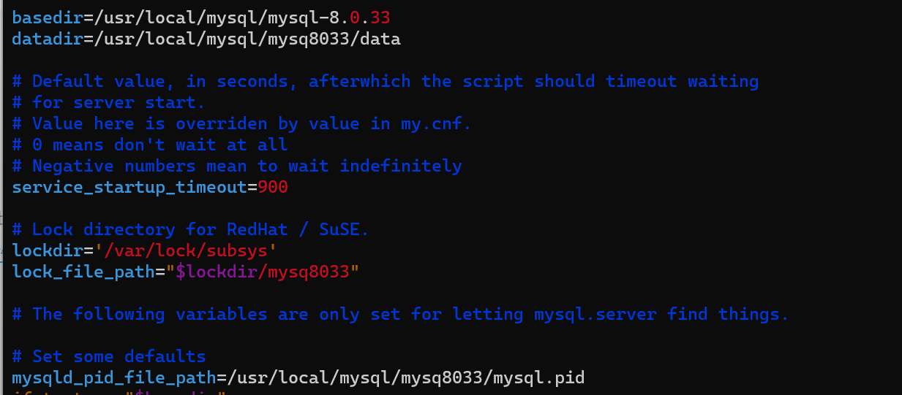
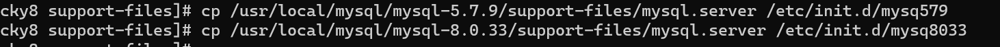

背景 1.nat转发 2个网卡连接到单内网网卡，从而连接 1.添加一块网卡并开启网卡转发 1 cat /proc/ sys/net/i pv4/ip_forward
确认网卡转发未开启，修改 /etc/sysctl.conf下参数
重启服务确认
将另外一个虚拟机的网关改为之前设定好的内网网卡id，并重启服务
确认情况，可以ping通网关，但不能ping通外网
2.iptables 转发 确认规则后
1 iptables -t nat -A POSTROUTING -s 192.168.214.100 -j MASQUERADE
即对192.168.214.100该ip进行伪装
对第二台机器重新ping百度，可以发现已经成功
可以将规则保存在/etc/sysconfig/iptables下
2.mysql 1.不同版本安装 1 wget https:// downloads.mysql.com/archives/g et/p/ 23 /file/my sql-5.7 .9 -linux-glibc2.5 -x86_64.tar.gz
1 wget https:// downloads.mysql.com/archives/g et/p/ 23 /file/my sql-8.0 .33 -linux-glibc2.28 -x86_64.tar.gz
指定解压到某目录，并重命名
1 tar -zxvf mysql-8 .0 .33 -linux-glibc2.28 -x86_64.tar.gz -C /usr/local/mysql
1 tar -zxvf mysql-5 .7 .9 -linux-glibc2.5 -x86_64.tar.gz -C /usr/local/mysql
1 mv mysql-5 .7 .9 -linux-glibc2.5 -x86_64 mysql-5 .7 .9
1 mv mysql-8 .0 .33 -linux-glibc2.28 -x86_64 mysql-8 .0 .33
配置my.cnf文件
以8033版本为例
1 2 3 4 5 6 7 8 9 10 11 12 13 14 15 [mysqld]3380 /usr/ local/mysql/my sql-8.0 .33 /usr/ local/mysql/my sq8033/data/tmp/my sq8033.sock/usr/ local/mysql/my sq8033/mysql.errfile =/usr/ local/mysql/my sq8033/mysql.pidcase table names=1 /usr/ local/mysql/my sq8033/logs/my sql.errfile =/usr/ local/mysql/my sq8033/mysql.pid/tmp/my sq8033
5.7.9同理
再进行service文件配置
以8033为例
进行软链接
1 vim /usr/ local/mysql/my sql-8.0 .33 /support-files/my sql.server

将2个版本的mysql.server复制到/etc/init.d/下
1 cp /usr/ local/mysql/my sql-5.7 .9 /support-files/my sql.server /etc/i nit.d/mysq579
1 cp /usr/ local/mysql/my sql-8.0 .33 /support-files/my sql.server /etc/i nit.d/mysq8033

创建用户并改变所有者
1 useradd -r -g mysql mysql
1 chown -R mysql.mysql /usr/ local/mysql/my sql-5.7 .9
1 chown -R mysql.mysql /usr/ local/mysql/my sql-8.0 .33
初始化数据库
1 ./mysqld --defaults-file=/u sr/local/my sql/mysql-5.7.9/my .cnf --basedir=/usr/ local/mysql/my sql-5.7 .9 --datadir=/usr/ local/mysql/my sql-5.7 .9 /data --user=mysql --initialize
ll 确认权限情况，并将data改为mysql属组
再次初始化数据库
Starting MySQL. ERROR! The server quit without updating PID file (/usr/local/mysql/mysql-5.7.9/mysql.pid).
排查发现，因为mysql文件夹里无logs文件夹
1 chown -R mysql.mysql /usr/ local/mysql/my sql-5.7 .9 /log
1 rm -rf /usr/ local/mysql/my sql-5.7 .9 /data/ *
重复上面代码
1 service mysql-5 .7 .9 start
8.0.33版本同样以该方法安装
1 ./mysqld --user=mysql --lower-case-table-names=1 --basedir=/u sr/local/my sql/mysql-5.7.9 --datadir=/u sr/local/my sql/mysql-5.7.9/ data/ --initialize
1 ./mysqld --defaults-file=/u sr/local/my sql/mysql-8.0.33/my .cnf --basedir=/usr/ local/mysql/my sql-8.0 .33 --datadir=/usr/ local/mysql/my sql-8.0 .33 /data --user=mysql --initialize